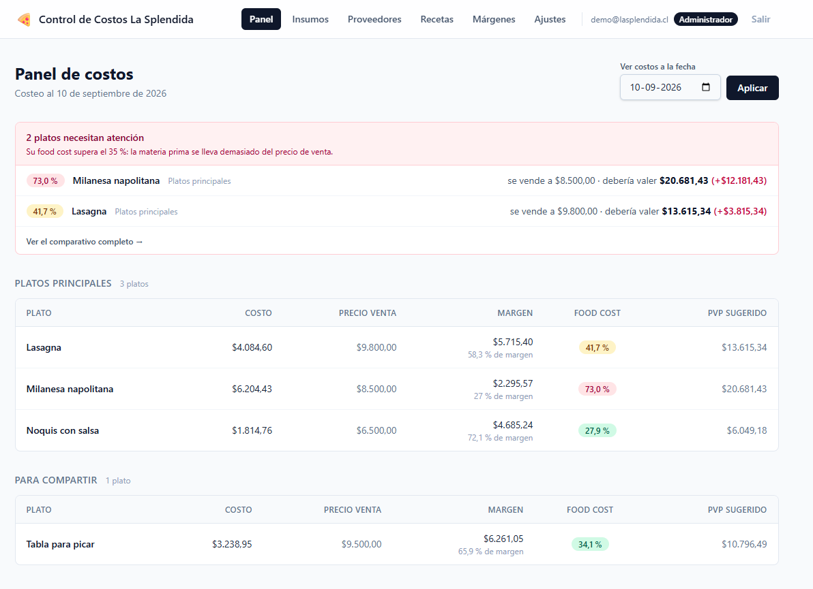

Control de Costos La Splendida
Cuánto cuesta realmente cada plato de la carta de un restaurante, y qué pasa con ese número cuando sube el precio de un insumo.
- Costeo recursivo: una salsa es una receta que se usa como ingrediente de otra.
- Historial de precios con fecha de vigencia; cualquier costo se consulta a cualquier fecha.
- Aviso por correo cuando un plato empeora su food cost.
- Tres roles, prueba de mutación, CI.
Rails 8PostgreSQLHotwire
TailwindKamalAWS Lightsail
Demo pública de solo lectura: demo@lasplendida.cl / demo1234